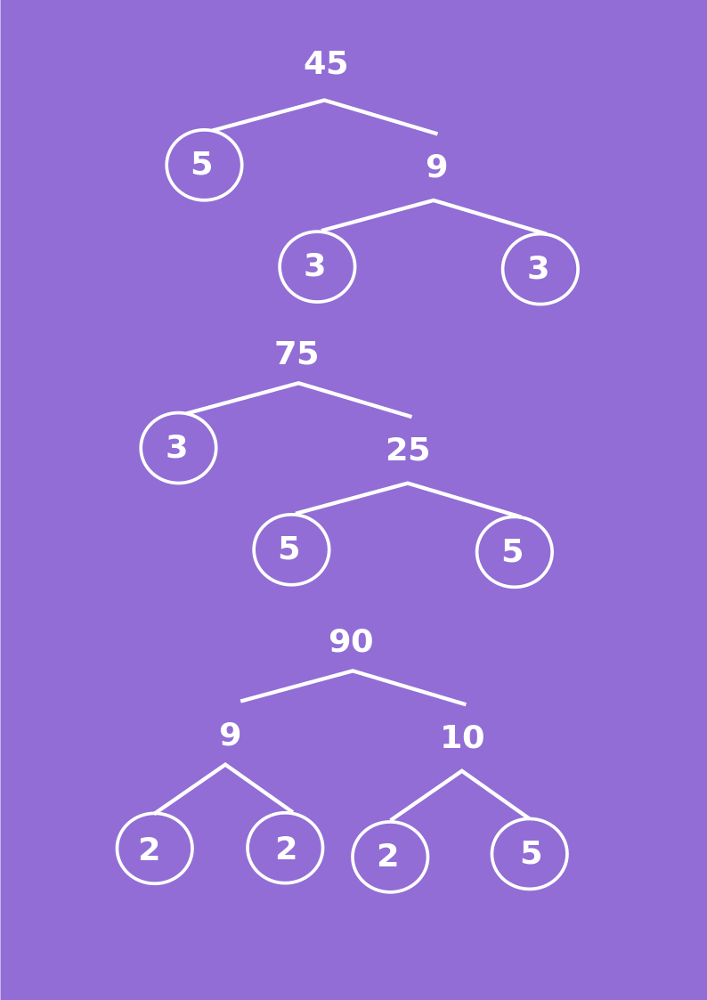

Sebelum kita menentukan FPB dari suatu bilangan kita harus mengetahui apa itu faktor persekutuan. \[a\] dikatakan faktor dari bilangan bulat \[b\] jika \[a\] membagi habis \[b\]. dengan kata lain dapat ditulis \[b = a \times n\], dengan \[n\] adalah suatu bilangan bulat.
Perhatikan bentuk perkalian bilangan 12 berikut.
Dari perkalian bilangan 12 diatas di peroleh 1, 2, 3, 4, 6, dan 12 membagi habis bilangan 12 sehingga faktor dari 12 adalah 1, 2, 3, 4, 6 dan 12.
Untuk menentukan FPB lihatlah contoh berikut ini: Contoh:
Tentukan FPB dari bilangan berikut.
6 dan 9
18, 24 dan 36
penyelesaian:
Faktor dari 6 adalah 1, 2, 3, dan 6
Faktor dari 9 adalah 1, 3, dan 9
Faktor yang sama (faktor persekutuan) dari 6 dan 9 adalah 1 dan 3
Bilangan terbesar diantara 1 dan 3 adalah 3
Bilangan 3 merupakan FPB dari 6 dan 9.
Faktor dari 18 adalah 1, 2, 3, 6 , 9 dan 18
Faktor dari 24 adalah 1, 2, 3, 4, 6, 8, 12, dan 24
Faktor dari 36 adalah 1, 2, 3, 4, 6, 9, 12, 18 dan 36
Faktor yang sama (faktor persekutuan) dari 18, 24 dan 36 adalah 1, 2, 3 dan 6
Bilangan terbesar diantara 1, 2, 3 dan 6 adalah 6
Bilangan 6 merupakan FPB dari 18, 24 dan 36.
Selain dengan cara diatas kita dapat menentukan FPB dengan cara faktorisasi perhatikan animasi dibawah berikut.
Petunjuk
tekan tombol mulai pada animasi dibawah
jika animasi belum muncul harap tunggu sebentar
didalam animasi akan ada pertanyaan silahkan dijawab
Baca Materi Terlebih Dahulu
Contoh Soal
1 dari 2
tentukan FPB dari 45, 75 dan 90
penyelesaian:
langkah 1:
menentukan faktorisasi prima dari 45, 75 dan 90

faktorisasi prima dari \[45 = 3 \times 3 \times 5 = 3^2 \times 5\]
faktorisasi prima dari \[75 = 3 \times 5 \times 5 = 3 \times 5^2\]
faktorisasi prima dari \[90 = 2 \times 3 \times 3 \times 5 = 2 \times 3^2 \times 5\]
langkah 2:
FPB ditentukan dengan mencari faktor-faktor prima yang sama dari setiap bilangan, lalu memilih faktor yang pangkatnya terendah dan mengalikannya.
faktor prima dari 45, 75, dan 90 adalah 2, 3(terdiri atas 3 dan \[3^2\]) dan 5(terdiri atas 5 dan \[5^2\])
diantara 3 dan \[3^2\] yang memiliki pangkat terendah adalah \[3\]
diantara 5 dan \[5^2\] yang memiliki pangkat terendah adalah \[5\]
FPB = \[3 \times 5 = 15\]
2 dari 2
pada hari minggu paman budi pergi memancing. paman budi mendapatkan 20 ikan papuyu dan 30 ikan lais, paman budi akan membungkus ikan ini dan membagikan kepada temannya dengan isi yang sama banyak. berapa bungkus yang dapat paman budi buat?
penyelesaian:
cara 1:
faktor 20 adalah
1 x 20 = 20
2 x 10 = 20
4 x 5 = 20
faktor dari 20 adalah 1, 2, 4, 5, 10 dan 20
faktor 30 adalah
1 x 30 = 30
2 x 15 = 30
3 x 10 = 30
5 x 6 = 30
faktor dari 30 adalah 1, 2, 3, 5, 6, 10, 15 dan 30
faktor yang sama dari 20 dan 30 adalah 1, 2, 5 dan 10
faktor terbesar dari 20 dan 30 adalah 10
jadi bungkus ikan yang dapat dibuat paman budi berjumlah 10 bungkus
cara 2:
menentukan faktorisasi prima dari 20 dan 30
faktorisasi prima dari \[20 = 2 \times 2 \times 5 = 2^2 \times 5\]
faktorisasi prima dari \[30 = 2 \times 3 \times 5\]
FPB = \[2 \times 5 = 10\]
jadi bungkus ikan yang dapat dibuat paman budi berjumlah 10 bungkus
pertanyaan
Petunjuk pengerjaan
isikan lah titik-titik dibawah ini dengan bilangan bulat
jika jawaban kamu benar, maka akan muncul tulisan jawaban benar
jika jawaban kamu salah, maka akan muncul tulisan jawaban salah disertai pembahasan
1 dari 3
hasil FPB dari 50, 80 dan 120
=
Petunjuk pengerjaan
isikan lah titik-titik dibawah ini dengan bilangan bulat
jika jawaban kamu benar, maka akan muncul tulisan jawaban benar
jika jawaban kamu salah, maka akan muncul tulisan jawaban salah disertai pembahasan
2 dari 3
hasil FPB dari 200, 550, dan 650
=
Petunjuk pengerjaan
isikan lah titik-titik dibawah ini dengan bilangan bulat
jika jawaban kamu benar, maka akan muncul tulisan jawaban benar
jika jawaban kamu salah, maka akan muncul tulisan jawaban salah disertai pembahasan
3 dari 3
Ibu mempunyai 50 buah kasturi dan 45 buah langsat. Buah kasturi dan langsat itu dibagikan kepada beberapa anak. Masing-masing anak menerima jumlah kasturi dan langsat yang sama. Berapa anak yang menerima buah tersebut?